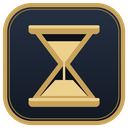
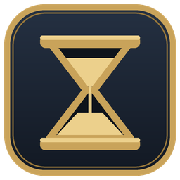

Everlast
Spell timers, voice alerts, maps, a DPS meter and raid helpers for Project 1999 EverQuest. Written for Linux in plain Python, so there is no Wine or .NET for the tool itself. It only reads your log file.
Beta · Linux · looking for testersEverything below can be switched off in Settings. Use only what you want.
Linux with Python 3 and Tk. An X11 session works best.
| Distro | Command |
|---|---|
| Debian / Ubuntu / Mint / Pop | sudo apt install python3-tk |
| Fedora | sudo dnf install python3-tkinter |
| Arch / Manjaro / SteamOS | sudo pacman -S tk |
| openSUSE | sudo zypper install python3-tk |
cd everlast
./install.sh # optional: adds an "everlast" command and an app-menu entry
./everlast/log on (or set Log=TRUE in eqclient.ini).
Every character you play needs it.sudo apt install espeak-ng (Debian family).On first start Everlast looks for your EverQuest folder (Wine, Lutris, Bottles, Steam/Proton,
~/Games). If it can't find it, Settings opens so you can pick the folder that holds eqgame.exe
and spells_us.txt.
Not at the moment. Everlast is built and tested for Linux. A Windows version may come later.
No. It only reads the eqlog_<character>_<server>.txt file that EverQuest writes,
the same way EQTool does. It never reads game memory or sends anything to the game.
That character's logging is probably off. Type /log on in game on it. Everlast's status line
tells you when the log it follows has been silent for a while. Tools → Character log lets you
pick a character's log by hand.
Click-through and transparency need an X11 session with a compositing window manager. On Wayland, X11 apps run through XWayland and some of this can't work. Tools → Diagnostics explains what your desktop allows.
No. Everlast is a fan project. It is not affiliated with Project 1999, Daybreak Game Company or EQTool.
Everlast is in beta and I am looking for testers, especially on desktops other than Cinnamon.
If something breaks, please open an issue and include your distro,
desktop, the version shown in the main window and what you expected to happen. The log file
~/.cache/eqtool-native/eqtool.log helps a lot.